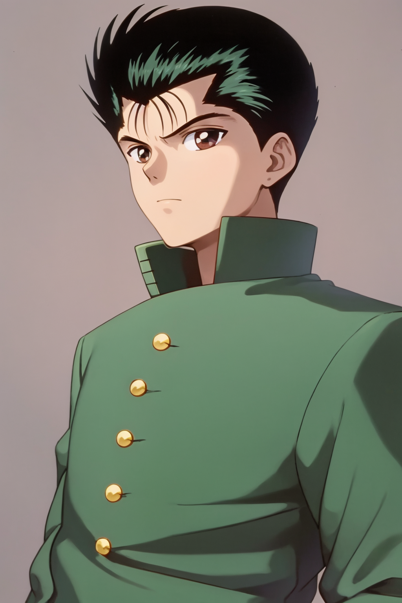
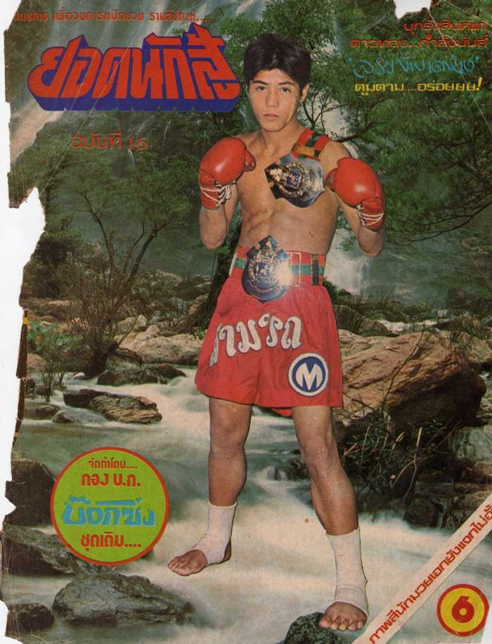
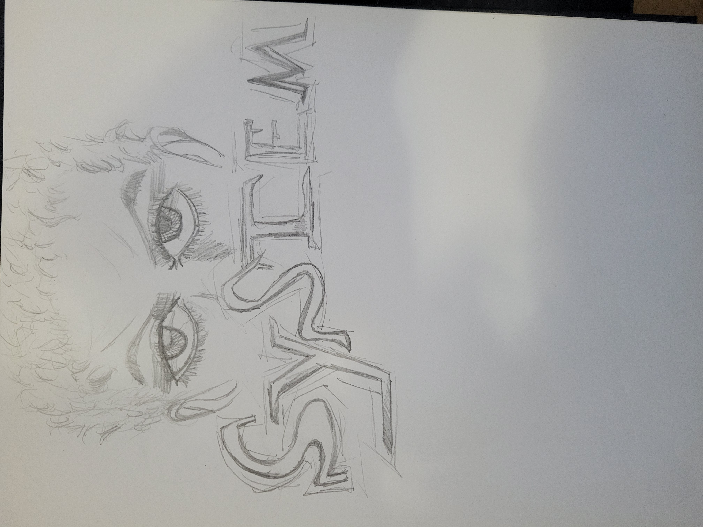
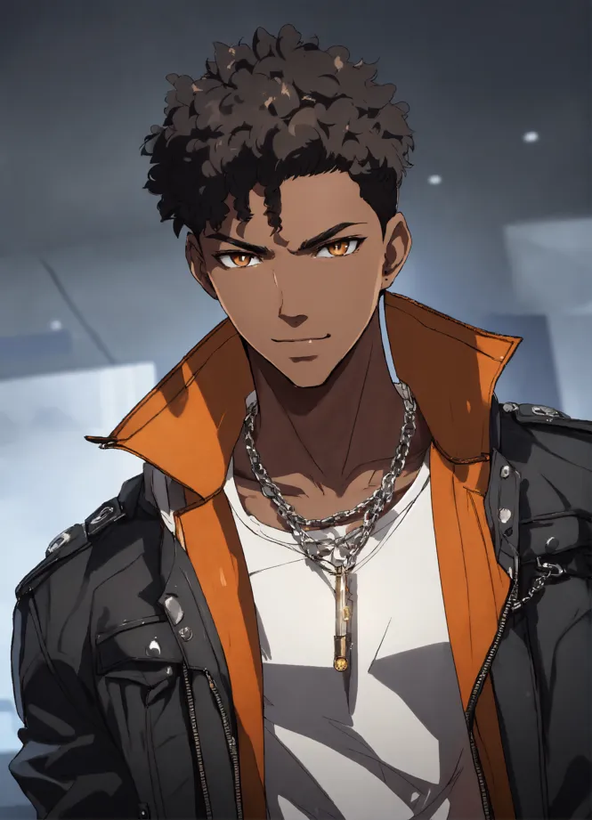

STRIVE DOCUMENTATION
Tobo The Fighter
Tobosian, the young fighter is a Muy Thai practitioner from Thailand who
was granted the status of an Initiator at a young age. He now resides in the Council
Zonis Region after escaping the deadly rebellion massacre in the International Southeast
Coalition Region. Back home was a different story for him when it came to his overall
lifestyle. His mother passed away when he was at the age of 8 and he's never
met his father. His Grandma was the one that raised him into his adolescent years. He
was recoginize for his graceful, yet fierce fighting skills in the combat sport Muy Thai.
He won many matches and tournaments to where he could earn a living off prize earnings
and local sponsorships. This all came to suden halt during the rebellion massacre.
After fleeing Thailand, he began working at a docking center that packages fish and rarely goes out at night unless it's for one of his legalized ring fights in the city of Potomac. Tobosian would meet a man named Fate who walked into his place of work one day. Fate discussed that he's been keeping a watchful eye on Tobosian and has a great opportunity that will not only change his life, but his vary soul. Fate asked Tobosian how confident he was in being an Initiator. Tobosian had no recollection of what that meant and didn't want to be bothered with anything that Fate was offering. Fate explains only bits and pieces about the new life that Tobosian would experience. He leaves his personal card on a table next to Tobosian and leaves the vincinity. Tobosian reviews the card and thinks about everything Fate told him.
After fleeing Thailand, he began working at a docking center that packages fish and rarely goes out at night unless it's for one of his legalized ring fights in the city of Potomac. Tobosian would meet a man named Fate who walked into his place of work one day. Fate discussed that he's been keeping a watchful eye on Tobosian and has a great opportunity that will not only change his life, but his vary soul. Fate asked Tobosian how confident he was in being an Initiator. Tobosian had no recollection of what that meant and didn't want to be bothered with anything that Fate was offering. Fate explains only bits and pieces about the new life that Tobosian would experience. He leaves his personal card on a table next to Tobosian and leaves the vincinity. Tobosian reviews the card and thinks about everything Fate told him.
Yusuke Urameshi
Samart Payakaroon
Mac The Rat
The son of Shane The Man. The true definition of a human that lives beyond
principality with no shame. He neglects the common interest of any other human
being and shows no remorse when it comes to putting himself at a higher level, even
if it means ruining the lives of others. Mac is known around town as the city snitch.
Ginger One
Ginger Two
The One From System
Jace Hearts, The One From System. The one who defies the system for everything that it's
worth. Jace is from Original Oregon Region before it was flooded by System. Jace
was a part of a small activist group back home that opposed all the Council's legislations
and zoning takeovers that made 80 percent of local citizens homeless. Jace's mother moved South
of the country to escape the destruction and advised Jace to follow suit, but his hard headed nature
prevailed. After losing a friend named Rondo to a heavy dispute over zoning with regional officers,
Jace decides to leave the Original Oregon Region to escape the madness. He settles in the Council
capital city, Potomac, and joins up with a new activist group called "The Hounds".
Jace would receive orders from The Hounds to gather data about the Council injecting the food and water supplies with chemical solutions such as Quantums Rift. He takes a job at a popular corporate store that is possibly involved in this fiasco to find any evidence of Quantum Rift storages. This would be Jace's first encounter with Allybelle and Angel Steel. Both Jace and AllyBelle formed a peculiarly relationship. Jace would later discover that the company was in fact assisting the Council by contaminating the food and water supplies in various regions. This led to him being fired for violating company policy. He was able to use this data to help The Hounds convince the people to riot and protest in the West Section of the city. This helped the Hounds to destroy a Council Control Station since all the focus and energy was put on stopping the protestors and rioters. Things would eventually take a dark turn on the day of the rebellion plot.
Jace would receive orders from The Hounds to gather data about the Council injecting the food and water supplies with chemical solutions such as Quantums Rift. He takes a job at a popular corporate store that is possibly involved in this fiasco to find any evidence of Quantum Rift storages. This would be Jace's first encounter with Allybelle and Angel Steel. Both Jace and AllyBelle formed a peculiarly relationship. Jace would later discover that the company was in fact assisting the Council by contaminating the food and water supplies in various regions. This led to him being fired for violating company policy. He was able to use this data to help The Hounds convince the people to riot and protest in the West Section of the city. This helped the Hounds to destroy a Council Control Station since all the focus and energy was put on stopping the protestors and rioters. Things would eventually take a dark turn on the day of the rebellion plot.
System Character Jace Hearts
Random AI Reference
